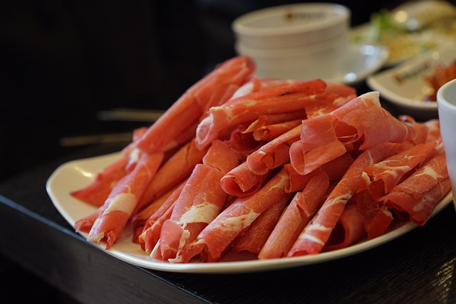

얇게 저민 쇠고기와 갖가지 채소를 끓는 육수에 즉석에서 데쳐서 양념장에 찍어 먹는 요리. 육류를 사용하는 몇 안 되는 일본 요리이기도 하다. 닭고기, 돼지고기 등 다른 육류를 쓰기도 하며, 해물 샤브샤브 등 육류가 아닌 주재료를 사용한 메뉴도 판매되고 있다.
이름은 '찰랑찰랑', '살짜기' 라는 의미의 일본어 의태어로, 소고기를 육수에 담가 휘휘 저어 익히는 모습에서 유래했다. 국립국어원 외래어 표기법으로는 샤부샤부이나 일상적으로는 샤브샤브와 샤부샤부가 모두 통용된다.